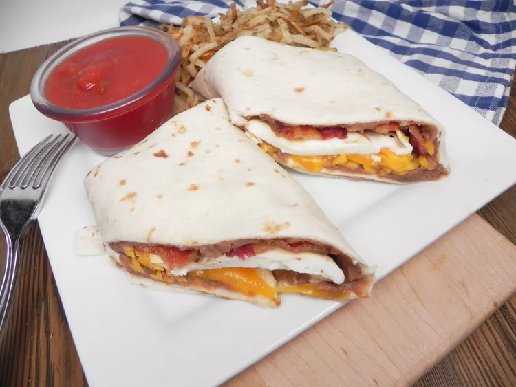

Breakfast Burrito

Description
This breakfast burrito with bacon and eggs is a different way to make burritos. Burritos with fried eggs, bacon, and refried beans are topped with melted cheese to create a savory dish. Serve with salsa on the side, and you are good to go!
Ingredients
- 1 pound bacon
- 10 eggs
- 1 (16 ounce) can refried beans
- 8 ounces shredded Cheddar cheese
- 10 (10 inch) flour tortillas
Steps
- Place bacon in a large, deep skillet. Cook over medium-high
heat until evenly brown.Drain, and set aside. Wrap tortillas
in foil and warm them in the overn.
- Fry eggs in a greased skillet until firm. In a small saucepan,
heat refried beans.
- Top each tortilla with refriend beans, 2 strips of bacon,
1 egg, and a little cheese. Roll tortillas into burritos and serve.